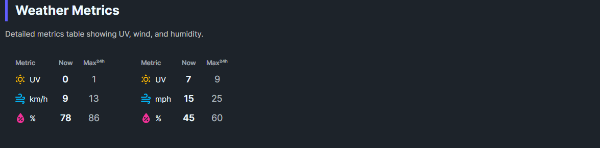

DaisyWeatherMetrics shows supplementary weather data in a structured grid. Each metric displays a label, icon, current value, and a progress bar showing the value relative to a maximum.
| Property | Type | Default | Description |
|---|---|---|---|
UvIndex |
double |
0 |
Current UV index (0-11+) |
UvMax |
double |
0 |
Maximum UV for the day |
WindSpeed |
double |
0 |
Current wind speed |
WindMax |
double |
0 |
Maximum wind speed |
WindUnit |
string |
"km/h" |
Wind speed unit |
Humidity |
int |
0 |
Current humidity (0-100%) |
HumidityMax |
int |
0 |
Maximum humidity |
Size |
DaisySize |
Medium |
Control size (ExtraSmall, Small, Medium, Large, ExtraLarge) |
<!-- Basic metrics display -->
<controls:DaisyWeatherMetrics
UvIndex="5"
UvMax="8"
WindSpeed="12"
WindMax="25"
WindUnit="km/h"
Humidity="65"
HumidityMax="85" />
<!-- Imperial units -->
<controls:DaisyWeatherMetrics
UvIndex="7"
UvMax="11"
WindSpeed="15"
WindMax="30"
WindUnit="mph"
Humidity="72"
HumidityMax="90" />
<!-- With data binding -->
<controls:DaisyWeatherMetrics
UvIndex="{Binding CurrentUV}"
UvMax="{Binding MaxUV}"
WindSpeed="{Binding Wind}"
WindMax="{Binding MaxWind}"
WindUnit="{Binding WindUnit}"
Humidity="{Binding CurrentHumidity}"
HumidityMax="{Binding MaxHumidity}" />The control displays three rows:
| Metric | Icon | Format | Progress |
|---|---|---|---|
| UV Index | ☀️ | 5 / 8 |
Bar showing current/max |
| Wind | 💨 | 12 km/h / 25 |
Bar showing current/max |
| Humidity | 💧 | 65% / 85% |
Bar showing current/max |
| Range | Level | Typical Color |
|---|---|---|
| 0-2 | Low | Green |
| 3-5 | Moderate | Yellow |
| 6-7 | High | Orange |
| 8-10 | Very High | Red |
| 11+ | Extreme | Purple |
DaisyBaseContentBrushDaisyPrimaryBrush